Have you thought who you'd call first when your curious golden retriever was kissed and sprayed by a skunk during your morning run? As pet owners, we often care about the well-being of our pets more than ourselves. My first thought was finding a nearby pet service that is currently open for business and accepting a last moment booking. Unfortunately, making an emergency pet grooming or washing appointment as a pet owner is not as easy as finding the next best sushi place around the neighborhood with Google Maps.
The goal is to design an app that connects pet owners and business owners in one place. It will save time for pet owners to book appointments by finding the available services around the area; it will give them freedom of choice for different kinds of services in the city. The app also allows business owners to accept bookings outside business hours and communicate directly with customers.
I feel like starting with a competitive analysis was a good foundation. Exploring the industry by comparing the services and testing the booking experience will help me understand what kind of feature is available and unavailable, and frustrating for users. I also wanted to find what kind of standard functionality people look for in pet booking services out there. I visited some independent businesses, big franchises and mobile pet services and learned what type of booking system they use.
I found PetSmart has an excellent web and mobile-based reservation system, Rover has a great private messaging system, and PetBacker has a detailed screening process for businesses. Still, most of the services aren't fulfiling users' needs, from the non-existent booking system, unavailability dates, to complicated on-boarding process.
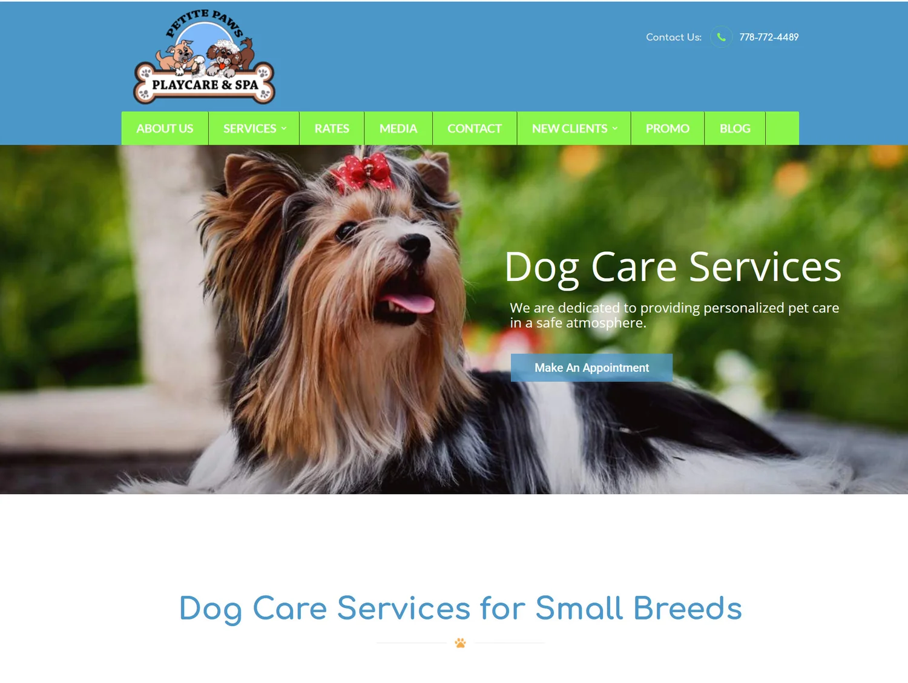
Competitive analysis: reviewing existing pet service websites and their booking systems.
I prepared interview questions and interviewed ten pet owners and five business owners from the nearby parks around downtown Vancouver. My purpose was to engage and understand their frustrations, needs and wants when it comes to conducting services around the area. By learning about their mobile booking experiences, I hope to discover some insights and tangible ideas on how to solve the problems.
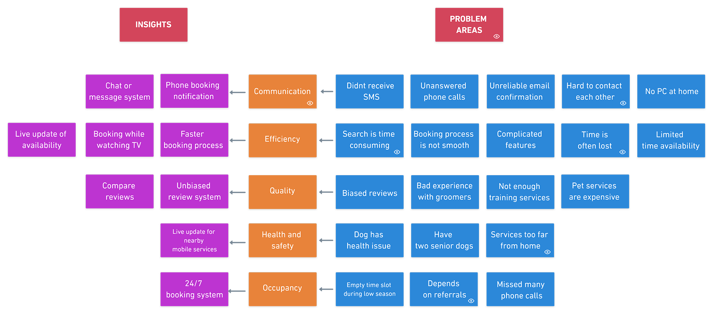
Affinity map: insights and problem areas organised by theme.
I wanted to focus on addressing most pain points that keep occurring and analyzed what kind of insights that appeared from the problem areas by creating an affinity map. I begin to sketch a rough draft of wireframes based on the frustrations that are constantly appearing from my map.
Based on the data I collected from the interviews, there are two type of Ruffly app users. Pet owners who want to book services around the area and business owners who want to have a booking app for their services. For this case study, I wanted to capture both sides of the users. I created these two User Personas to outline the behavioural pattern of the users, their needs and goals.
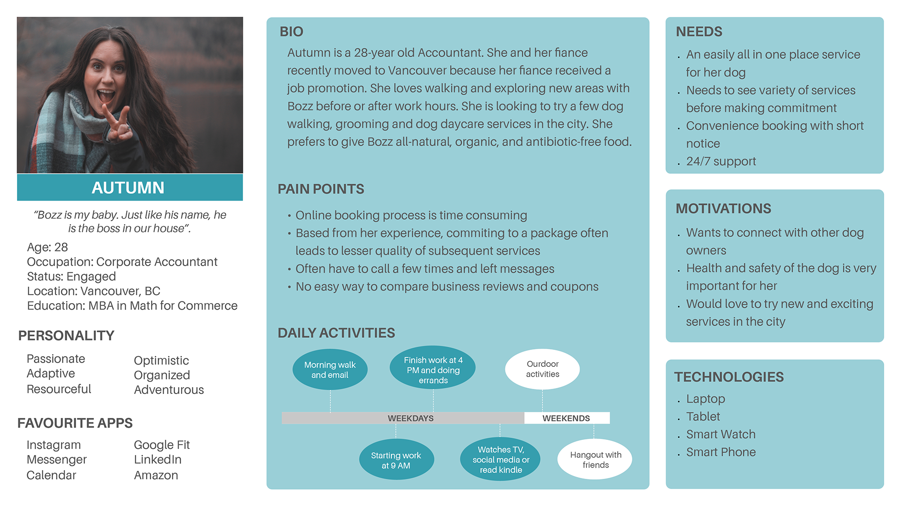
Autumn, pet owner persona outlining needs, pain points, and daily activities.
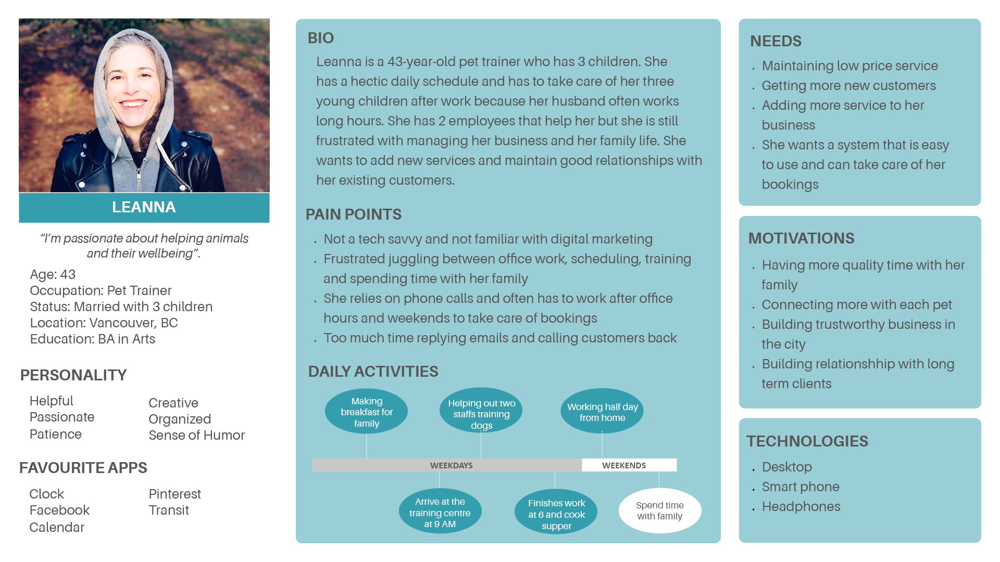
Leanna, business owner persona outlining needs, pain points, and daily activities.
Mobile devices provide an easier way for pet owners to connect with businesses. Also, our increased needs to use technology as utility tools has been growing rapidly. There is a growing number of pet businesses in Vancouver. Still, there is no efficient way to book an appointment with them without comparing multiple businesses and checking reviews before we make our decision. With more pet owners shifting from desktop to mobile devices:
- How might we find an effective ecosystem that will connect pet owners with pet businesses?
- How might we make booking system process for business owners more reliable and simpler?
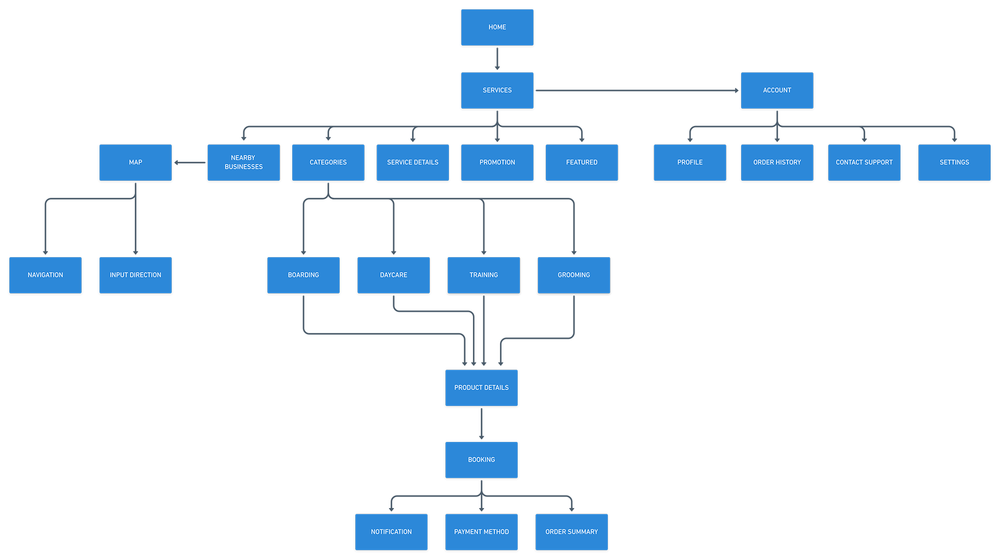
Site map: information architecture structured to simplify the number of steps needed to complete a booking.
Next, I created low fidelity wireframes with a pen and paper. During this design stage, the low fidelity wireframe helped me visually without worrying about the font, colour palette, images and text. From low fidelity wireframes, I created high fidelity wireframes with Sketch. By adding user flows with Whimsical, it helps me understand the number of taps or steps that user needs to complete a transaction. The next step would be adding the interaction in inVision.
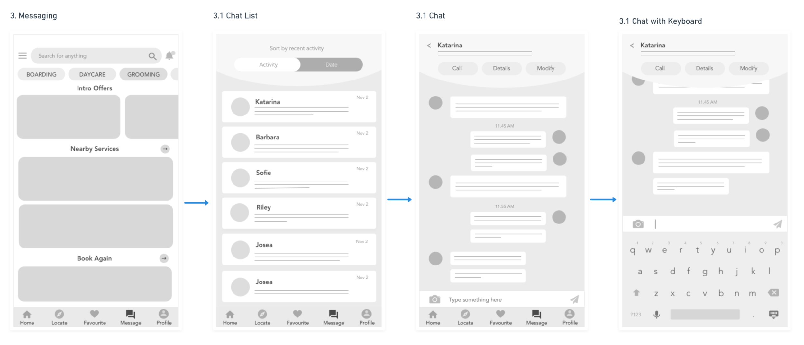
Onboarding flow: registration through to home screen for pet owner account.
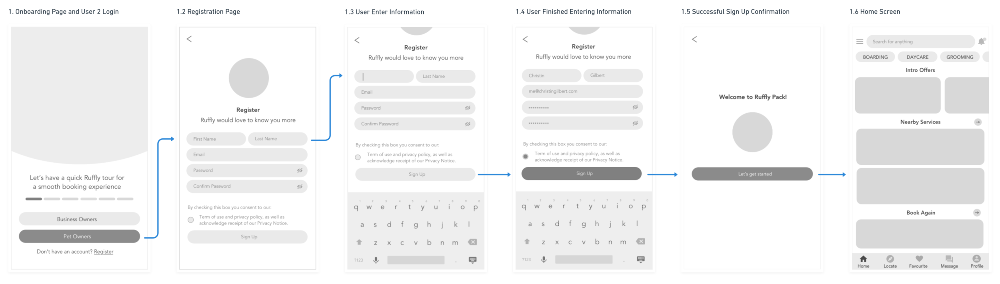
Booking flow: service selection through to successful transaction.
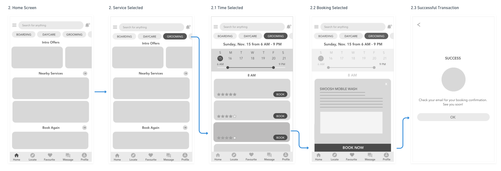
Messaging flow: in-app communication between pet owners and service providers.
During my visual design process, I wanted the app to look beautiful, but I also imagine how someone who sees differently would read and use it. I continuously checked my colour pairing with the Colorzilla colour checker tool and calculated the contrast ratio with WebAIM contrast checker. It is essential to have the contrast ratio of at least 4.5:1 as described in the Web Content Accessibility Guidelines (WCAG) 2.1 guidelines, making sure the look and feel of the app are sufficiently inclusive for users who are sighted differently.
I choose turquoise colour because it's calming, radiating positivity and tranquillity, while soft yellow colour adds optimism and playfulness. It also represents the colour of many glacial lakes we have in British Columbia.
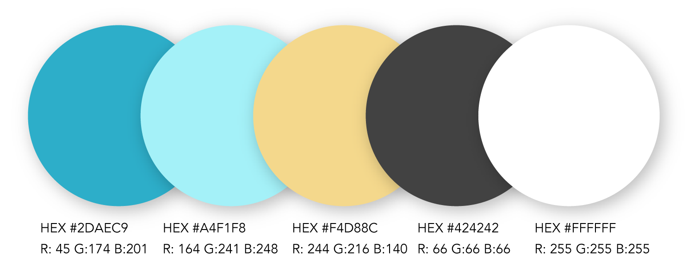
I choose Avenir as the main font and Georgia as the header font because both fonts are adaptable. Avenir font is modern and held up well in both web or print, large or small text sizes. Georgia is a serif typeface that is designed for clarity on small prints or low resolution screens.
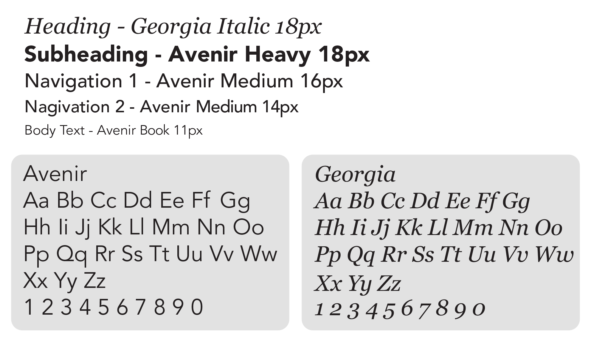
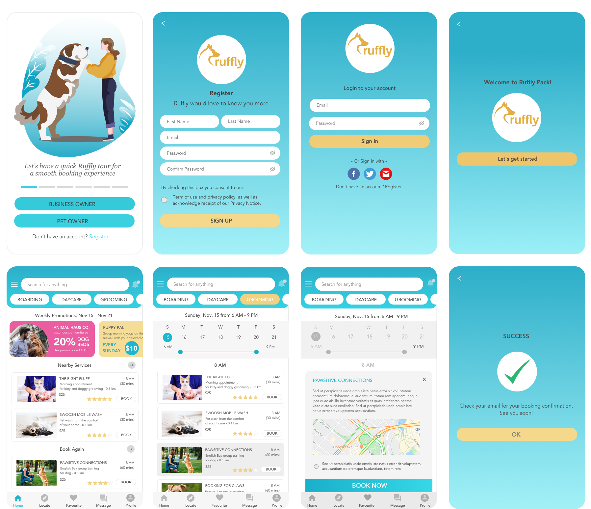
High fidelity screens: onboarding through to booking confirmation.
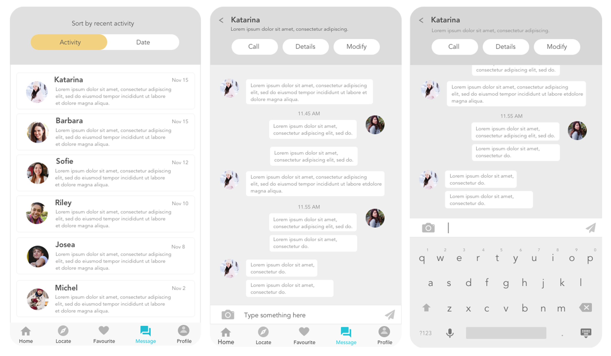
Messaging flow: chat list, conversation view, and keyboard states.
I exported my Sketch file to InVision to create a basic interaction. For this prototype, I focused on the successful path flow of the pet owner's account from the onboarding process all the way to choosing a boarding service and purchase confirmation. I feel at this stage it's important to start testing with real users for further iterations. I want to understand how users interact with the app and test my assumptions, leading to further findings and refinements.
I recruited six participants who owned pets or plan to have a pet. During the first round of user testing, the onboarding function wasn't effective enough for the users because it was hidden under the setting menu. I moved the onboarding process to the first screen to give the users a quick walk through of the app.
Another insight from the user testing, I discovered some users weren't comfortable signing in with a social media account. With this insight in mind, I decided to change the sign up using social media as an option.
I noticed during my first user testing that there was some confusion with the icons at the bottom of the screen. I decided to add text to make the footer navigation more clear.
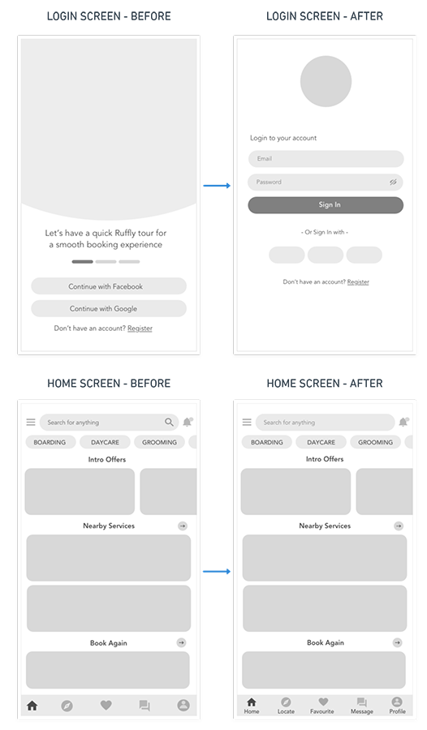
Login and home screen revised following usability testing.
Due to our hectic daily life, the demands for an efficient booking system, transparent transactions and mobile pet services are higher each year. My hope is to continue improving this pet booking app and making this app a free mobile application for our community.
My visual design process was more challenging because I wanted to include as many users as possible, who see and experience the app differently. Although it takes time to design with the accessibility and inclusive design in mind, it's necessary to apply this as early as possible in the design process.
I often assumed features that were easy for me turned out to be a frustration to users. Having continuous user testing to gain feedback and validation as early as possible is very important for further refinements and insights.